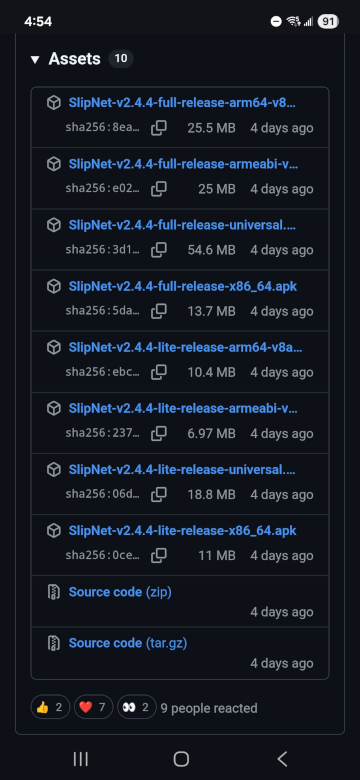
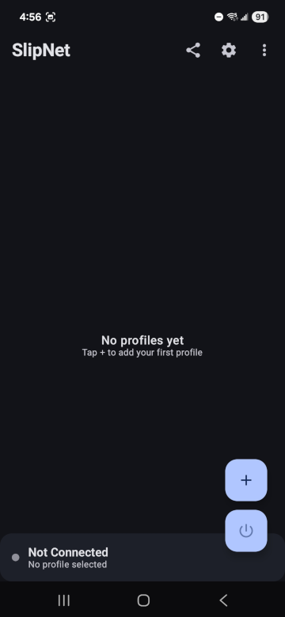
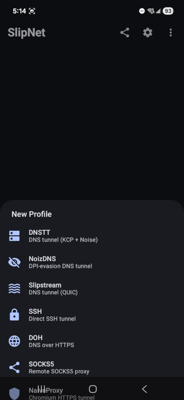
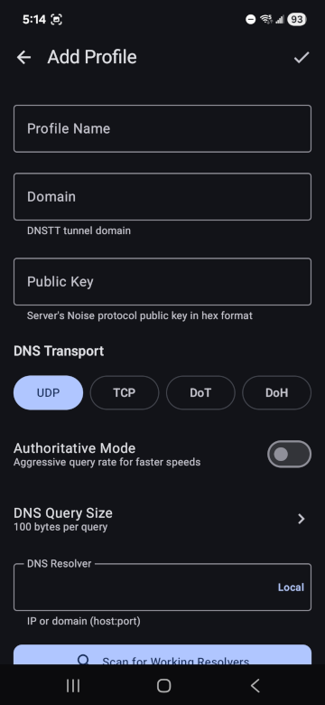

Before you begin, you will need:
Unable to locate package dante-server)Go into your domain name registrar's configuration panel.
Create an A record for your server hostname and an NS record for the subdomain that will be resolved at your server.
| Name | Type | Value |
|---|---|---|
tns.example.com |
A |
Your server IP address |
t.example.com |
NS |
tns.example.com |
SSH into your server as root. Copy and paste this command into your SSH session:
bash <(curl -Ls https://raw.githubusercontent.com/bugfloyd/dnstt-deploy/main/dnstt-deploy.sh)
The script prompts you to enter your chosen subdomain:
[QUESTION] Enter the nameserver subdomain (e.g., t.example.com):
The script prompts you to optionally override the default maximum transmission unit (MTU). It defaults to 1,232 bytes.
[QUESTION] Enter MTU value (default: 1232):
The script prompts you to specify SOCKS mode or SSH mode.
Select tunnel mode: 1) SOCKS proxy 2) SSH mode [QUESTION] Enter choice (1 or 2):
The script opens port udp/5300 and persists the revised iptables rules:
[INFO] Saving iptables rules... [INFO] IPv4 iptables rules saved to /etc/iptables/rules.v4 [INFO] IPv6 iptables rules saved to /etc/iptables/rules.v6
On successful completion, the script displays feedback and instructions:
+================================================================================ | SETUP COMPLETED SUCCESSFULLY! | +================================================================================ Configuration Details: Nameserver subdomain: t.example.com MTU: 1232 Tunnel mode: socks Service user: dnstt Listen port: 5300 (DNS traffic redirected from port 53) Public Key Content: 757aca0f8b41c14d948e433706a2b6d2b86bf9066d452f64be349b8d1d75150e Script installed at: /usr/local/bin/dnstt-deploy Management Commands: Run menu: dnstt-deploy Start service: systemctl start dnstt-server Stop service: systemctl stop dnstt-server Service status: systemctl status dnstt-server View logs: journalctl -u dnstt-server -f SOCKS Proxy Information: SOCKS proxy is running on 127.0.0.1:1080 Dante service commands: Status: systemctl status danted Stop: systemctl stop danted Start: systemctl start danted Logs: journalctl -u danted -f +================================================================================
As indicated in the messages:
dnstt-server is now listening on port udp/5300dante (SOCKS proxy) is now listening on localhost port tcp/1080Exit your SSH session with the server:
exit
SlipNet is not available on any app store. Any version you find on Google Play, the Apple App Store, or any other marketplace is not published by anonvector and may be outdated, modified, or unsafe. The only official sources are the GitHub repository https://github.com/anonvector/SlipNet and the Telegram channel https://t.me/SlipNet_app.
It comes in these architectures:
arm64-v8a (64-bit)arm64abi-v7a (32-bit)x86-64 (Intel)universal (if you do not know your phone's architecture)
Click the plus button to add a new profile.

Select DNSTT as the type.

You are presented with a screen to enter the profile details.

t.example.com.757a...150e.